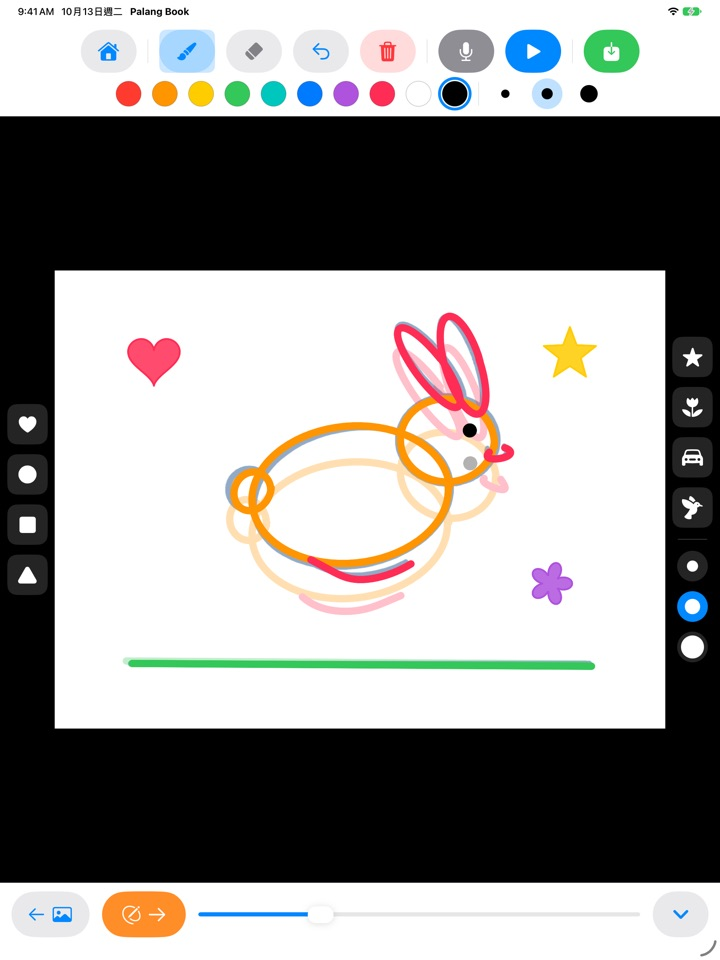
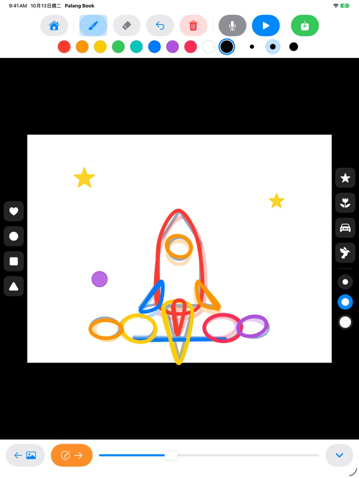
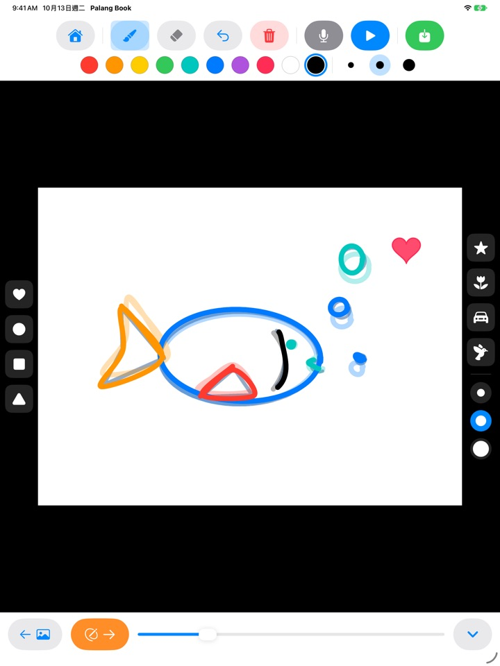
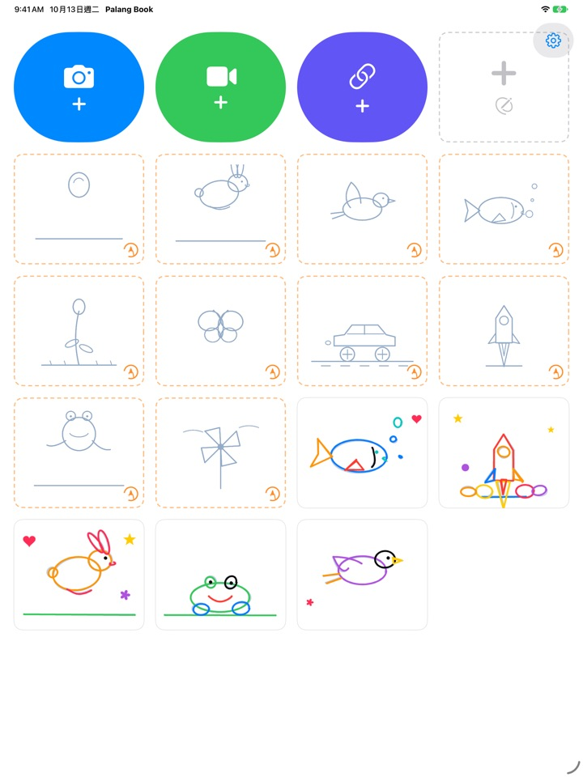

跟著描一描
圖畫就動起來
照著淡淡的底圖一頁一頁描，按下播放，底圖就會消失，只留下孩子自己畫的線條動起來。所有按鈕都是圖案，還不認得字的小朋友也能自己玩。
僅支援 iPad。3 組描圖免費使用。

一頁一頁畫畫看
畫好一頁，點橘色箭頭翻到下一頁，上一頁會淡淡地透出來。畫個兩三頁之後，按下藍色播放鍵，圖就會動起來。
孩子畫的圖，只停在一張紙上不覺得可惜嗎？
做動畫得把差不多的圖一點一點改著畫好多張，孩子自己常常不知道該從哪裡開始。Palang Book 先鋪好帶著動作的淡淡底圖，孩子只要沿著線描就好。按下播放的那一刻，就會看到自己的畫動起來。
沿著線描，就是動畫
彈跳的球、蹦蹦跳的小兔子、飛翔的小鳥、游來游去的魚、慢慢綻放的花、蝴蝶、奔馳的車子、升空的火箭、青蛙、風車。每組大約有 20 頁底圖。
上一頁的畫會淡淡地透出來，接著畫下一頁很輕鬆；播放時底圖會消失，只有孩子的畫在動。

蓋印章，十種顏色
愛心、圓形、方形、三角形、星星、花朵、車子、小鳥印章，輕輕一點就能蓋上去裝飾。印章大小和筆刷粗細各有三種，顏色有十種。
有橡皮擦和復原，畫錯了也能馬上重畫。用手指或 Apple Pencil 都能畫。

在自己的影片上畫，也能在白紙上畫
可以匯入自己拍的影片或照片 App 裡的影片，直接在上面描。遮住背景後，只有畫過的畫面會在白紙上接續播放。也有不用底圖、在白紙上自由畫的翻頁書。
按下麥克風，就能把孩子的聲音一起錄進去；完成的作品可以儲存成影片到照片 App，和家人分享。

三個步驟就能開始
- 1
點一張底圖卡片
首頁上橘色虛線框的卡片就是描圖。
- 2
畫一頁，翻一頁
點橘色箭頭，就會翻到下一頁。
- 3
按下播放
按下藍色播放鍵，自己的畫就動起來了。
按鈕說明
- 橘色虛線卡片
- 開始照著底圖描
- 灰色虛線卡片
- 空白翻頁書
- 藍色相機
- 在自己拍的影片上畫
- 綠色攝影機
- 匯入照片 App 裡的影片
- 靛藍色連結
- 貼上影片檔案連結並開啟
- 橘色箭頭
- 翻到下一頁
- 藍色播放
- 播放動畫，再按一次停止
- 彎曲箭頭
- 復原最後一筆
- 紅色垃圾桶
- 清除整頁（可以用復原救回來）
- 麥克風
- 動畫重複播放時錄下聲音
- 影片圖示
- 遮住影片背景（變成粉紅斜線時只播放圖畫）
- 綠色儲存
- 以影片儲存到照片 App
要刪除作品，請在首頁長按作品卡片。圖畫、錄音和匯入的影片會一起刪除。
先免費玩個夠，喜歡再買終身解鎖
免費
- 3 組描圖（球、兔子、花）
- 保存 3 件作品
- 匯入 1 次影片
- 空白翻頁書最多 10 頁
- 錄音最長 15 秒
- 印章、顏色、筆刷，儲存到照片 App
終身解鎖
- 全部描圖，包含之後推出的新套組
- 作品、頁數、影片、錄音長度都不受限制
- 儲存的影片結尾不再出現 Palang Book 卡片
不是訂閱制，只要購買一次。支援家人共享，全家的 iPad 都能一起用。
免費儲存的影片結尾會有一張簡短的 Palang Book 卡片。如果你在終身解鎖推出前就已經在用 Palang Book，所有功能都會維持開放。
常見問題
底圖要怎麼用？
淡藍色的線就是底圖，孩子沿著線描就可以了。按下播放，底圖會消失，只有孩子畫的線條會動。畫完大約 20 頁就完成了。
我想不要影片，只播放和儲存圖畫。
在影片作品裡，點一下上方工具列的影片圖示，讓它變成粉紅斜線，播放和儲存時就只會在白色背景上顯示圖畫。只有畫過的畫面會接續播放，所以在長影片上只畫幾頁，也能變成一段短動畫。
完成的影片會存在哪裡？
點一下工具列最右邊的綠色儲存按鈕，mp4 影片就會儲存到照片 App。第一次儲存時，請允許取用照片。
要怎麼加入聲音？
按下麥克風按鈕，動畫重複播放的同時就會開始錄音，按下停止鍵就結束錄音。重新錄音會蓋掉之前的錄音。儲存時聲音也會一起放進影片裡。
影片連結打不開。
請確認網路連線，並確認貼上的網址是直接指向影片檔案的連結（以 .mp4 等結尾的網址）。影音分享網站的網頁連結無法開啟。為了保護著作權，請使用自己拍的影片或可以自由使用的影片。
手掌碰到螢幕，畫出多餘的線。
用彎曲箭頭可以擦掉最後一筆，紅色垃圾桶會清除整頁（用復原還能救回來）。如果常常發生，請寫信告訴我們，我們會幫你處理。
為什麼購買畫面前會出現算術題？
這是為了不讓孩子自己進到購買畫面。孩子點到上鎖的內容時，會出現一個大鎖和「請拿給大人看」，要由大人輸入乘法題的答案，購買畫面才會打開。
要怎麼恢復購買？
點一下主畫面右上角的齒輪，選擇終身解鎖，答對大人確認題後，點一下恢復購買。請確認登入的是購買時使用的同一個 Apple 帳號。
要怎麼從 App 發送意見回饋？
點一下主畫面上的齒輪，選擇發送意見回饋。可以附上截圖；如果希望收到回覆，請留下姓名和電子郵件。請由家長發送意見回饋。
會收集孩子的資料嗎？
不會。Palang Book 不會收集任何個人資料，圖畫和錄音只會儲存在這台 iPad 上。詳細內容請參閱隱私權政策。
有任何疑問或問題，歡迎寫信到 mizzking75@gmail.com。我們通常會在 2 到 3 天內回覆。